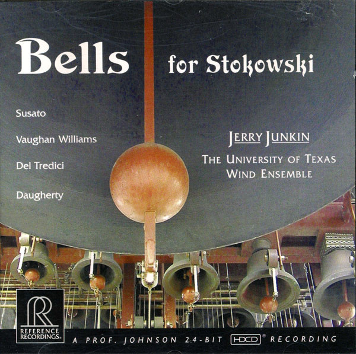

CD
Bells For Stokowski
Tielman Susato / Ralph Vaughan Williams / David Del Tredici / Michael Daugherty - Jerry Junkin, The University Of Texas Wind Ensemble
Media: — · Sleeve: —
—
Personal
Discogs SuggestedCA$38.22
Discogs MedianCA$38.22
Discogs HighCA$38.22
- Physical Copy ID
- BB-CD-3013
- Year
- 2004
- Label
- Reference Recordings
- Catalog #
- RR-104 CD
- Country
- USUS
- Genre / Style
- Classical · Modern, Dances, Suite, Concert Band, Program Music, Contemporary, Renaissance, Wind Ensemble, Brass Instrument, Early